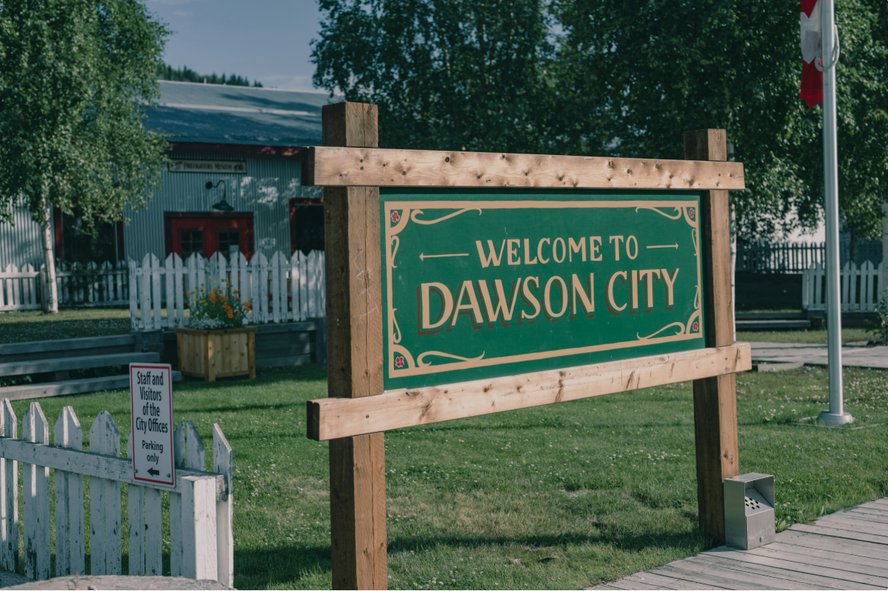
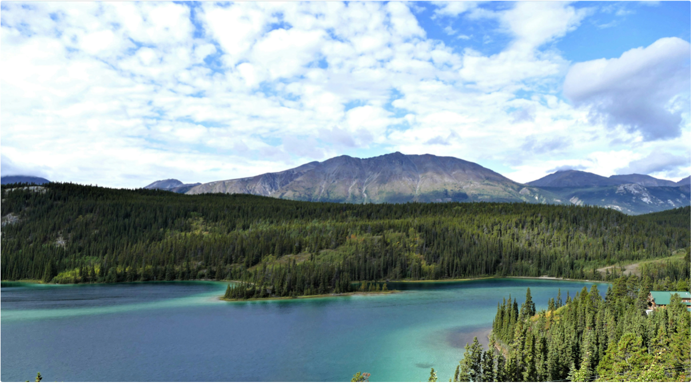

Element United Partners with Gold Rush Star Todd Hoffman to Digitize Yukon Gold Claims
Discovery Channel legend brings multi-generational mining expertise to Identify.earth platform; CORE™ and STRIA™ create complete verification from claim to market
FOR IMMEDIATE RELEASE
Dawson City, Yukon – November 2025
Element United today announced a groundbreaking partnership with Todd Hoffman, creator and star of Discovery Channel's hit series Gold Rush, to stake and digitize gold claims across the Yukon using Element United's Identify.earth platform.
The partnership leverages advanced satellite verification technology to confirm gold deposits in the ground, creating verified digital certificates for fractional claim ownership through CORE™. When gold is extracted, STRIA™ provides real-time traceability from mine to market—making Yukon gold both accessible and accountable.
Complete Transparency:
- CORE™ verifies and digitizes in-ground reserves, enabling fractional ownership without immediate extraction
- STRIA™ tracks any extracted gold through the entire supply chain with verified ethical practices
- Identify.earth houses both systems, creating an unbroken record from claim to consumer
Hoffman, who launched the gold mining reality television phenomenon and mines alongside his father Jack and son Hunter, brings decades of hands-on mining experience and a commitment to ethical, family-centered resource development.
"For three generations, my family has chased gold across Alaska and the Yukon—but we've always known there's gold we can't reach, claims too remote or too expensive to mine," said Todd Hoffman. "Element United changes everything. Now we can verify what's in the ground, stake those claims, and let everyday people own a piece of Yukon gold country. And when that gold does come out of the ground, STRIA makes sure it's tracked every step of the way—clean, ethical, traceable. That's the future."
"Todd Hoffman represents everything Element United stands for—integrity, family values, and the vision to do things differently," said Scott Lomu, President of Element United. "He built an empire by showing the world what real mining looks like. Now we're proving what the future looks like: verified reserves through CORE, traceable extraction through STRIA, all on the Identify.earth platform. Todd's the perfect partner to demonstrate complete supply chain transparency—from Yukon claim to finished gold."
How It Works:
- Satellite Verification: Advanced imaging technology confirms gold deposits before claims are staked
- CORE™ Digitization: Verified reserves are recorded on Identify.earth as secure digital certificates
- Fractional Ownership: Individual investors can purchase verified ownership stakes in Yukon gold claims
- STRIA™ Traceability: When gold is extracted, it's tracked in real-time from mine to refinery to end buyer
- Complete Transparency: Identify.earth provides the full story—from ground to market
The partnership positions Element United to expand its complete verification ecosystem across North America's most legendary gold regions, with the Hoffman family's multi-generational expertise guiding responsible claim development and ethical extraction.
For investors: Visit ElementUnited.earth to explore verified Yukon gold claim opportunities.
For claim holders and prospectors: Contact Element United to digitize your reserves through Identify.earth.
About Todd Hoffman
Todd Hoffman is the creator and original star of Discovery Channel's Gold Rush, the network's highest-rated series with over 170 million viewers worldwide. A third-generation miner from Sandy, Oregon, Hoffman turned his family's gold mining dreams into a television phenomenon that has inspired a generation of prospectors. Known for his unwavering faith, family-first values, and never-give-up attitude, Hoffman continues to push the boundaries of what's possible in modern gold mining.
About Element United
Element United provides blockchain-based verification systems spanning natural resource management, mining operations, and asset preservation. Through platforms like Identify.earth, STRIA™, CORE™, and NextHeir, Element United creates transparent, verifiable records that bridge industries—from ethical extraction to family heirlooms, from mine to market to memory.
Every element tells a story. Element United built the system that maps them all—making trust infrastructure.
Media Contact
Element United
Press Relations
press@elementunited.com